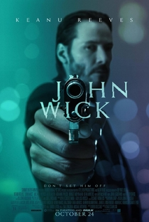

Diretor: Chad Stahelski
Data de lançamento: 27 de novembro de 2014
John Wick é um lendário assassino de aluguel aposentado, lidando com o luto após perder o grande amor de sua vida. Quando um gângster invade sua casa, mata seu cachorro e rouba seu carro, ele é forçado a voltar à ativa e inicia sua vingança.
links importantes: